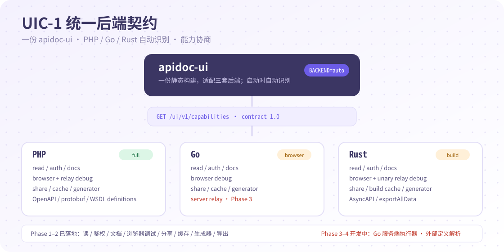

本页目录
apidoc-ui 是 PHP、Go、Rust 三套后端共用的文档前端。它负责拉取接口配置与文档数据，以应用/版本/分组展示接口，并提供在线调试、任意协议面板、分享、Swagger 导出、缓存管理等能力。构建产物是纯静态文件，不依赖任何后端运行环境。

适用场景
- 已经使用 apidoc-php、apidoc-go 或 apidoc-rust，想要统一的文档界面。
- 想把文档前端部署到静态服务器、CDN 或后端项目的
public目录。 - 需要多应用/版本、在线调试、接口分享、Swagger 导出与缓存管理。
- 需要把界面语言、标题、请求地址做成运行时配置，而不是重新打包。
构建与部署
要求 Node.js 18 或更高版本：
npm ci
npm run dev # 本地开发，默认端口见 config/constant.ts
npm run build # vue-tsc + Vite 构建，产物在 apidoc/
部署要点：
- 把
apidoc/目录整体放到静态服务器，或后端项目的 public 目录。 config.js必须和index.html同目录，产物中已自动携带。- 替换旧版本前先清空旧目录，避免残留的哈希资源被缓存。
- 修改
config.js后强制刷新一次；config.js?v=<版本号>是缓存戳。
运行时配置
config.js 与 index.html 同级，修改后刷新立即生效，不需要重新构建：
window.apidocFeConfig = {
TITLE: "Apidoc",
BACKEND: "auto", // auto / php / go / rust
SHOW_VERSION: true,
HTTP: {
HOSTS: ["https://api.example.com"], // 多个后端可切换；[] 表示同源
API_PREFIX: "/apidoc",
TIMEOUT: 30000,
WITHCREDENTIALS: false,
ENCODEURICOMPONENT: false,
},
AUTH: {
ERROR_STATUS: 401,
ERROR_CODE_FIELD: "code",
},
MENU: { SHOWURL: false },
METHOD_COLOR: {
GET: "#87d068",
POST: "#2db7f5",
PUT: "#ff9800",
DELETE: "#ff4d4f",
PATCH: "#802feb",
},
API_DETAIL_TABS: ["table", "json", "ts", "protocol", "debug"],
LOAD_SCRIPTS: ["./utils/md5.js"],
};
| 配置 | 说明 |
|---|---|
TITLE |
页面标题。 |
BACKEND |
后端类型：auto（默认）、php、go、rust；auto 通过 UIC-1 能力接口自动识别。 |
SHOW_VERSION |
是否在首页底部显示版本号。 |
CACHE.PREFIX |
本地缓存键前缀；不同环境可以分开。 |
HTTP.HOSTS |
后端地址列表，可多个切换；留空使用同源。 |
HTTP.API_PREFIX |
请求前缀，默认 /apidoc。 |
HTTP.TIMEOUT |
请求超时，毫秒。 |
HTTP.WITHCREDENTIALS |
跨域请求是否携带凭据。 |
AUTH.ERROR_STATUS / ERROR_CODE_FIELD |
鉴权失败的状态码与响应字段。 |
MENU.SHOWURL |
菜单是否显示接口 URL。 |
METHOD_COLOR |
各请求类型的颜色。 |
API_DETAIL_TABS |
详情页标签顺序：table、json、ts、protocol、debug；无协议或不可调试时会自动隐藏对应标签。 |
LOAD_SCRIPTS |
额外加载的脚本，例如 md5。 |
DEBUG_EVENTS |
调试事件扩展，见下文。 |
MOCK_EXTENDS |
自定义 Mock 规则。 |
CUSTOM_METHODS |
自定义方法。 |
LANG |
界面文案语言包，可增补。 |
多后端识别与 UIC-1 契约
apidoc-ui 已完整适配 UIC-1 统一后端契约：同一份构建通过 GET /ui/v1/capabilities 自动识别 PHP、Go、Rust 后端，再按 features 能力矩阵显示对应入口。

BACKEND: "auto"先探测/ui/v1/capabilities；404 或非契约响应时回退 legacy PHP/config。- 能力开关覆盖菜单/详情/文档、浏览器与服务端调试、分享、缓存、生成器、导出和鉴权；后端未实现的功能不会返回假成功。
- UIC-1 token 通过
Authorization: Bearer传递，并按host + scope缓存；legacy PHP 继续使用原有 MD5/body token 适配层。 - 三套后端均已实现读接口、鉴权、文档、浏览器/服务端调试、分享、缓存、生成器和导出；Go 提供构建标签隔离的服务端执行器与 9 种定义解析，Rust 提供 9 种定义解析与
ui: UiMode::Vue共享 UI。同一份dist/uic1-ui构建可同时服务三端。 - Rust 的缓存管理为构建期物化模式（
cache.mode: "build"），UI 会显示“无需运行时清理”，而不是伪造成功。
多应用、多 Host 与 appKey
HOSTS有多个地址时，界面提供 Host 切换；每个 Host 可以是不同的后端服务。- 同一后端可以挂多个应用。前端按以下优先级选择
appKey：URL 参数?appKey=xxx、后端返回的应用列表第一项、侧边栏手动选择。 - 授权 token 按 appKey 分别缓存（
CACHE.PREFIX + appKey），切换应用互不影响。 - 多版本项目会在应用树中展示版本节点，切换后重新拉取对应接口数据。
鉴权
后端开启密码后，UI 会显示密码遮罩。输入密码后，前端调用后端的登录接口换取 token，并按 appKey 存储。AUTH.ERROR_STATUS 与 AUTH.ERROR_CODE_FIELD 用于识别未授权响应。跨域部署时：
- 后端需要允许文档页面的 Origin。
HTTP.WITHCREDENTIALS为true时，后端不能使用*作为允许来源，必须回显具体 Origin。- token 存在浏览器本地缓存中；共享电脑上要注意清理。
在线调试与全局参数
详情页的 Debug 标签支持：
- Header / Query / Body / Route 参数；
- 全局参数（一次填写，所有请求携带）；
- 文件选择与文件上传；
- 请求前/后事件：可以在发送前修改参数，或在响应后格式化结果；
- Mock 预填：使用后端返回的 Mock 示例；
- 响应状态、耗时与 pretty JSON 展示。
DEBUG_EVENTS 可以注册自定义事件，例如对密码字段做 md5，或把 token 写入全局 Header：
window.apidocFeConfig.DEBUG_EVENTS = {
setToken(param) {
return new Promise((resolve, reject) => {
this.setGlobalHeader({ ...param, value: `Bearer ${param.value}` })
.then(() => resolve(param))
.catch(reject);
});
},
};
任意协议面板
后端用 #[Protocol] / #[Channel] / #[Debug] 声明的接口会在详情页显示协议徽标与「协议」标签：
- 协议标签展示协议名称、通道地址，以及
#[Definition]解析出的消息字段、样例校验和语法错误；定义错误不会阻断页面。 - HTTP/REST/SOAP/GraphQL 等继续使用 Debug 标签；WebSocket/SSE 由浏览器直连；MQTT、STOMP、gRPC、TCP/UDP 等由后端中继执行。
- 后端返回
debuggable: false时，调试标签自动隐藏并展示原因；中继未启用时面板显示relayEnabled提示。 - Markdown / 打印导出会包含协议、通道和定义文件解析出的消息结构。
协议能力由后端决定；UI 只按 protocol / channel / debug / definitions 渲染，不解释协议语义。
接口分享、导出与缓存
- 接口分享：生成指定应用/接口的链接，必要时附带 token。
- 导出：Swagger/OpenAPI JSON、Markdown、Postman JSON、PDF（打印）。
- 缓存管理：生成或清除接口缓存；后端开启缓存后，这里可以主动刷新。
- JSON / TypeScript 视图：直接复制请求/响应示例与类型定义给前端。
典型部署场景
同源部署
后端与 UI 在同一个域名下，HOSTS: []、API_PREFIX: "/apidoc" 即可。把 UI 产物放到后端 public 目录的 /apidoc-ui/，或把后端 docs 前缀反代到 UI 所需路径。
跨域部署
把 UI 放到静态站点，HOSTS: ["https://api.example.com"]，后端配置 CORS 白名单。需要携带 Cookie 时设置 WITHCREDENTIALS: true，并让后端回显具体 Origin。
多后端切换
HOSTS 配置多个地址，适合测试/预发/生产或多套微服务。每个 Host 的 token、应用选择独立管理。
子路径部署
UI 使用相对路径构建，放到 /docs/ 等子目录也可以工作；确保 config.js 与 index.html 同目录，并按部署路径调整 API_PREFIX 或 HOSTS。
规则与排错
| 问题 | 检查 |
|---|---|
| 页面空白或 404 | config.js 是否与 index.html 同目录；静态服务器是否正确回退到 index.html。 |
| 接口列表为空 | HOSTS / API_PREFIX 是否指向后端文档接口；后端是否返回 401。 |
| CORS 失败 | 后端是否允许 UI 的 Origin；WITHCREDENTIALS 与 * 是否冲突。 |
| 修改配置不生效 | 强制刷新；检查 config.js?v= 缓存戳。 |
| 旧资源残留 | 发布前清空旧目录，避免旧哈希资源混入。 |
| 鉴权反复失败 | 检查密码、应用密码、token 过期时间与 appKey。 |
| 分享链接打不开 | 检查链接是否带正确 Host、appKey 与 token。 |
| 调试结果异常 | 检查全局 Header/Query/Body、前置脚本与目标接口 CORS。 |
| 协议标签不显示 | 后端是否为该接口返回 protocol；非 HTTP 注解是否至少带一个方法级注解。 |
| 协议面板无法发送 | 后端 protocols.debug.relay_enable 是否开启、是否要求 token/shareKey；查看 debuggable 与 debugReason。 |
参考
- apidoc-ui README
- apidoc-ui 仓库
- 后端使用指南：PHP · Go · Rust
安装
npm ci && npm run build其他语言指南
需要帮助？
到 GitHub Issues 提问，或先看仓库 README。